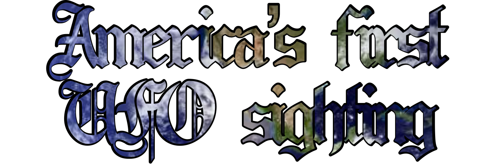
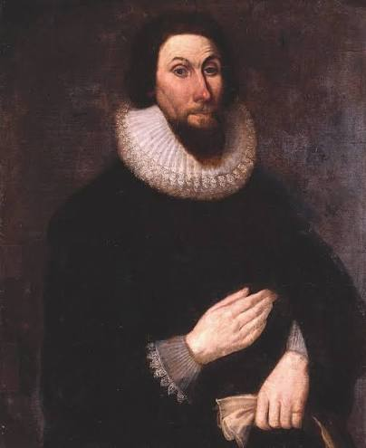

Recorded by John Winthrop, the govenor of Massachussets Bay Colony.

Fun fact: John Winthrop was actually a Puritan, and Puritans don't believe in aliens, and other extra-terrestrial stuff.
"In this year one James Everell, a sober, discreet man, and two others, saw a great light in the night at Muddy River. When it stood still, it flamed up, and was about three yards square; when it ran it was contracted into the figure of a swine. It ran swift as an arrow toward Charlton [Charlestown] and up and down about two or three hours. They were come down in their lighter [a small barge] about a mile, and, when it was over, they found themselves carried quite back against the tide to the place they came from." Winthrop wrote on March 1, 1639.